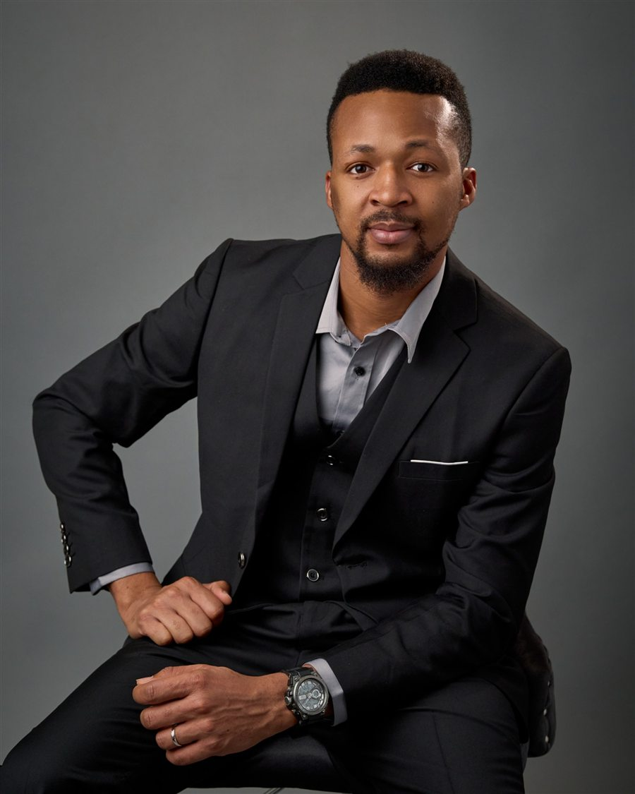

Product mindset
Start from the problem
Interviews before features. LabPass began with conversations with the faculty member who runs the lab, not with a feature list.
Product · Quality · Impact
I build products, improve processes, and run programs that people actually adopt. Whether the work is a SaaS roadmap, a control chart on a production line, or a platform serving 2,000 users across 122 organizations, I start from the problem and measure the result.

What connects the work
Products, production lines, and programs all have users, failure points, and a result to measure. I treat each one that way.
Product mindset
Interviews before features. LabPass began with conversations with the faculty member who runs the lab, not with a feature list.
Technology adoption
I took UNSUB from 17 to 2,000 users in two months through structured onboarding and change management.
Data analytics
Regression, time-series forecasting (MAD, MSE, MAPE), and KPI dashboards that replaced decisions made on intuition.
Quality
A Lean Six Sigma Green Belt applying SPC and Cp/Cpk analysis to production, and risk-based test plans to software.
Leadership
I report to a CEO, coordinate offshore engineers, train CNC operators, and teach students to measure precisely.
Featured builds
Each one started with a real operational problem: a sales pipeline, a job search, a production line, a departmental lab.
AI outreach agent · Aeonian Technology
Finds verified US and Canada prospects every day and emails each one from the company inbox, reaching hundreds of potential clients a week with no manual effort.
See product builds →Founder & Product Lead · AI job search
An AI job search platform piloted with 8 NC A&T job seekers. I shipped 10+ releases in 4 weeks, with safeguards that keep every document true to the user's real facts.
Read the Jobsmyth story →Quality · Eclipse Extractives
A web app that plots control charts, tracks defect opportunities, and flags when a process goes out of control.
See quality work →AI agent · 5S & Lean · NC A&T AET
A phone-based system that brings 5S and Lean to the Applied Engineering Technology lab, built with the department after interviewing the faculty member who runs it.
Read the LabPass story →Career at a glance
Most recent first. Labels show which profile each role supports most.
Own strategy, roadmap, and delivery for three SaaS platforms, reporting to the CEO.
Founded and lead an AI job search platform piloted with 8 NC A&T job seekers, shipping 10+ releases in 4 weeks.
Trained participants across two ACE CNC machining bootcamps in machine operation, setup, tooling, G-code, and Autodesk Fusion.
Ran a multi-channel recruitment initiative end to end, delivering 150+ registrations against target.
Teach precision measurement to undergraduates in AET 191 and to middle and high school students through Greensboro SCALE.
GPA 4.0, expected December 2026. Coursework in Six Sigma quality, strategic quality, and technology management analytics.
Forecasting and regression models, KPI dashboards, personas, and competitive analysis that informed planning and positioning.
GPA 4.0. Taught public speaking for three semesters as a teaching assistant.
Leading a Statistical Process Control program for a tungsten mining operation, reporting to the CEO.
Scaled UNSUB from 17 to 2,000 users across 122 organizations and ran Project RISE for 35,000 beneficiaries.
Product strategy, workflow redesign, and process improvement for 10+ clients across financial services, nonprofit, and technology.
Education & credentials
Contact
Reach out about a product role, a quality or operations challenge, or a program that needs to reach more people.